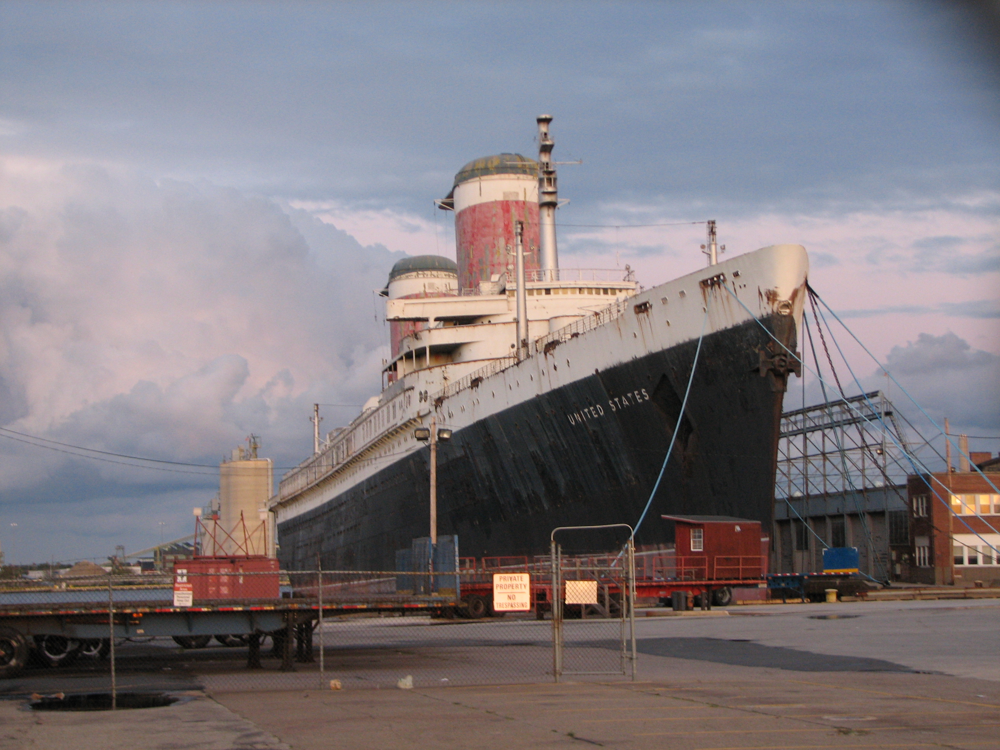
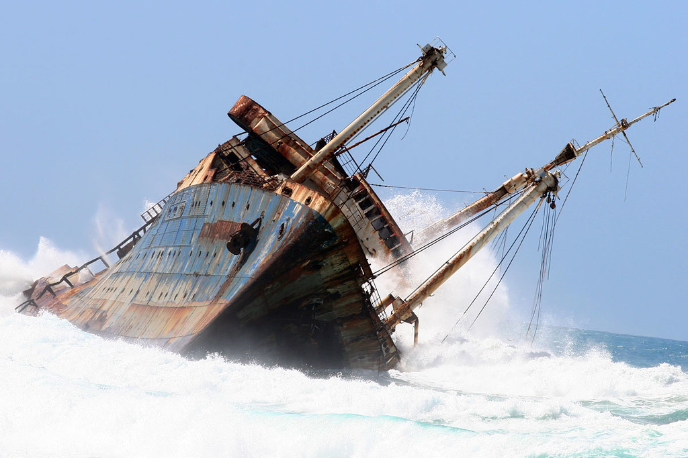

<nav>
<a href="index.html">Start</a>
<a href="thema.html">Mein Thema</a>
<a href="kontakt.html">Kontakt</a>
</nav>
<nav>
<p>ss SS-United_States</P>
    <textarea readonly>Die SS United States war ein großes Passagierschiff aus den USA. Sie wurde 1952 fertiggestellt. Das Schiff war ungefähr 300 Meter lang. Es konnte sehr schnell über den Atlantik fahren. Viele Menschen reisten damit nach Europa. Später wurde das Schiff nicht mehr als Passagierschiff benutzt. Heute ist es vor allem als berühmtes Schiff der amerikanischen Geschichte bekannt.</textarea>
    
</body>
</html>
<table>
  <tr>
    <td> SS-United_States</td>
    <td>1952-2026</td>
  </tr>
  <tr>
    <td>SS America</td>
    <td>1940-1994</td>
  </tr>
</table>
<TExtarea readonly>SS AMERRIKA</TExtarea>

<TEXtarea readonly>Die SS America war ein großes Passagierschiff aus den USA. Sie wurde 1940 gebaut. Das Schiff war etwa 220 Meter lang. Im Zweiten Weltkrieg transportierte es Soldaten. Danach brachte es wieder Passagiere über das Meer. 1994 wurde es verkauft. Später sollte es zu einem Hotel umgebaut werden. Doch das Schiff lief auf Grund und wurde schwer beschädigt. Heute liegt das Wrack vor der Küste der Kanarischen Inseln.</TEXtarea width="200">
<meta name="viewport" content="width=device-width, initial-scale=1.0">